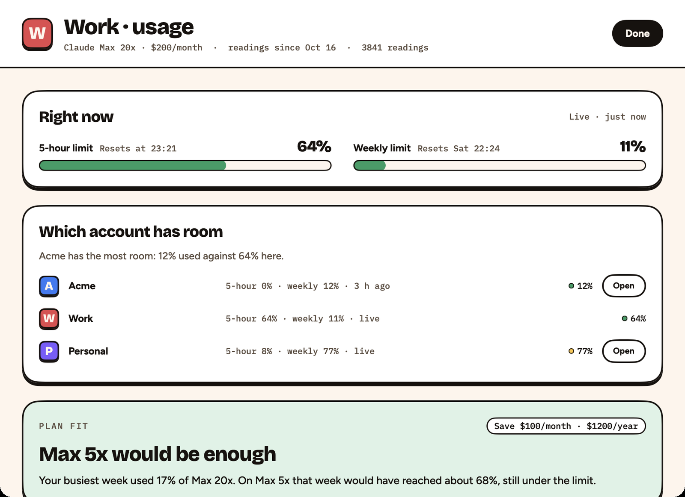

Short answer: Claude Desktop keeps one account per data folder, so one copy of the app means one account. To use more, log out and back in, keep the second account in a browser profile, or start a second Claude Desktop with its own data folder. Switch for Claude does the last one for you: every account opens in its own window, all at the same time, with live usage limits for each.
Why Claude Desktop holds one account
Claude Desktop keeps your login, its local cache and its settings in one data folder, ~/Library/Application Support/Claude. Signing in to another account replaces the login in that folder. The account menu switches between organizations of the same login, for example a personal plan and a Team plan on one email, but not between two different logins. A feature request for real multi-account support (anthropics/claude-code#32783) is still open.
So every way to use multiple accounts comes down to the same idea: give each account its own place to keep its login.
- Log out and back in
- A browser profile for the second account
- A second Claude Desktop with
--user-data-dir - Every account open at once with Switch for Claude
Side by side
| What you get | Log out and in | Browser profile | --user-data-dir |
Switch for Claude |
|---|---|---|---|---|
| Accounts open at once | One | Two or more, one in the app | All of them | All of them |
| Desktop app for every account | Yes, one at a time | No, the others run in a browser | Yes | Yes, each in its own window |
| Sign in again to switch | Every time | No | No, once per folder | No, once per profile |
| Shows which account is which | No | Browser profile name | Only the folder name you chose | Email and plan per profile |
| Usage limits per account | No | No | No | Live 5-hour and weekly limits |
| Claude Code on the same account | Separate login | Separate login | Set up yourself | Yes, one click |
| Setup | None | A browser profile | Terminal command or script per account | Mac app, one click per profile |
| Price | Free | Free | Free | $9.99 once |
1. Log out and back in
Click your initials in Claude Desktop, choose Log out, and sign in to the other account.
- Good: nothing to install, works on Mac and Windows.
- Less good: one account at a time and a browser sign-in on every switch. Your browser often stays signed in to the account you used last, so the login can land in the wrong account unless you sign out of claude.ai first or use a private window.
Pick it if you switch once a week or less.
2. A browser profile for the second account
Keep your main account in Claude Desktop and open claude.ai in a separate browser profile (Chrome, Edge, Brave, Arc) or a Firefox container for the other one. Each profile keeps its own cookies, so each stays signed in.
- Good: free, works everywhere, both accounts open at once.
- Less good: the second account lives in a browser tab, not the app: no global shortcut, no desktop extensions or local MCP servers, no Claude Code next to it. With three or more accounts the tabs pile up.
Pick it if you have exactly two accounts and the second one is for occasional chats.
3. A second Claude Desktop with --user-data-dir
Claude Desktop is an Electron app, and Electron accepts a --user-data-dir flag that points it at a different data folder. A folder per account gives you a separate Claude Desktop per account, running side by side:
open -n -a "Claude" --args --user-data-dir="$HOME/.claude-desktop/work"
open -n -a "Claude" --args --user-data-dir="$HOME/.claude-desktop/personal"Sign in once in each window. From then on each command opens that account directly.
- Good: free, every account in the real desktop app, all open at once, each with its own chats and settings.
- Less good: you run a command or write a launcher app for every account, and the windows all look the same, so you have to remember which is which. Sign-in links open whichever instance claimed them last, so sign in to one new instance at a time. Each folder is a fresh install, so connectors and settings are set up again per account.
Pick it if you like owning your setup and don't mind a terminal.
4. Every account open at once with Switch for Claude
Switch for Claude is a Mac app built on the same idea as option 3, without the command line. Every account gets a profile. One click opens Claude Desktop for that account in its own window, and Claude Code in Terminal, iTerm, Ghostty or Warp, signed in to the same account.
- Every account open at once, each in its own window with its own login, chats and settings.
- Know which account has room: live 5-hour and weekly usage for every account, in the app and the menu bar, plus which plan would be enough.
- See who is who: email and plan on every profile, every profile one click away in the menu bar.
- Brings your setup along: it finds profiles you already made with Multi-Claude, Multiple Claude or the claude-switch CLI.
- Private: no account, no analytics, logins stay in your macOS Keychain.
Mac only, $9.99 once, no subscription.
Buy for Mac · $9.99
Usage for every account in Switch for Claude.
Using Claude Code with several accounts?
Claude Code has the same limit: one login per config folder. A CLAUDE_CONFIG_DIR alias per account, the claude-swap CLI and Switch for Claude all build on that. The comparison of four ways to switch Claude Code accounts goes through each one.
Questions
Can I have multiple accounts in the Claude desktop app?
Not inside one copy of the app. Claude Desktop keeps one signed-in account per data folder, and the account menu only switches between organizations that belong to that one login. For a second personal or work account you either log out and back in, use claude.ai in a second browser profile, or open Claude Desktop again with its own data folder, which is what Switch for Claude does with one click per account.
Can I be logged in to two Claude accounts at the same time?
Yes, with a second data folder. Started with Electron's --user-data-dir flag, Claude Desktop runs a second, separate instance with its own login, chats and settings. Switch for Claude creates and opens these instances for you, each in its own window, and shows live usage for every account.
Do my chats move between accounts?
No. Chats, projects and settings belong to the account they were made in. A separate data folder per account keeps them apart on your Mac as well, so nothing leaks from your work account into your personal one.
Does this work for Claude Code too?
Claude Code keeps one login per config folder, set with the CLAUDE_CONFIG_DIR environment variable. A shell alias per account works in the terminal. Switch for Claude opens Claude Code in your terminal on the same account as the Claude Desktop profile, so both match.
What about Windows?
Switch for Claude is a Mac app. On Windows, a second browser profile with claude.ai is the simplest way to keep two accounts open, and logging out and back in works in every version of the app.
Every Claude account. Open at once.
Claude Desktop and Claude Code, one window per account, live usage for each. $9.99 once.
Buy for Mac · $9.99